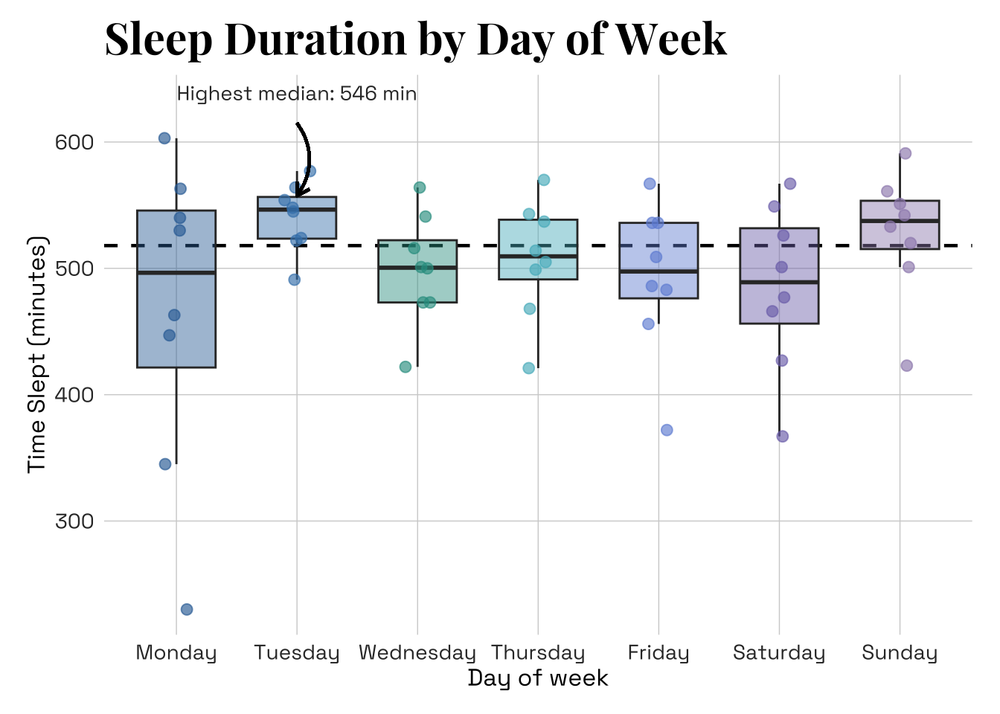
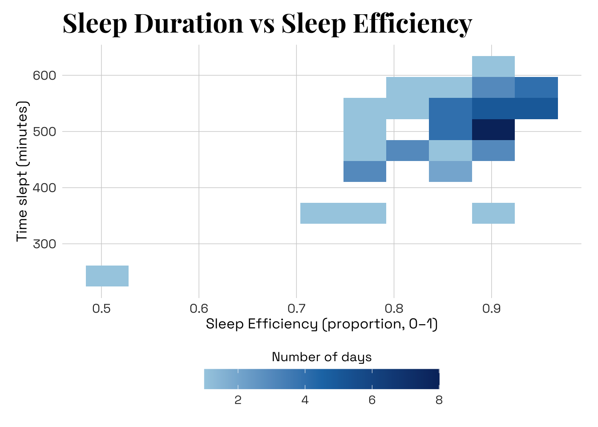
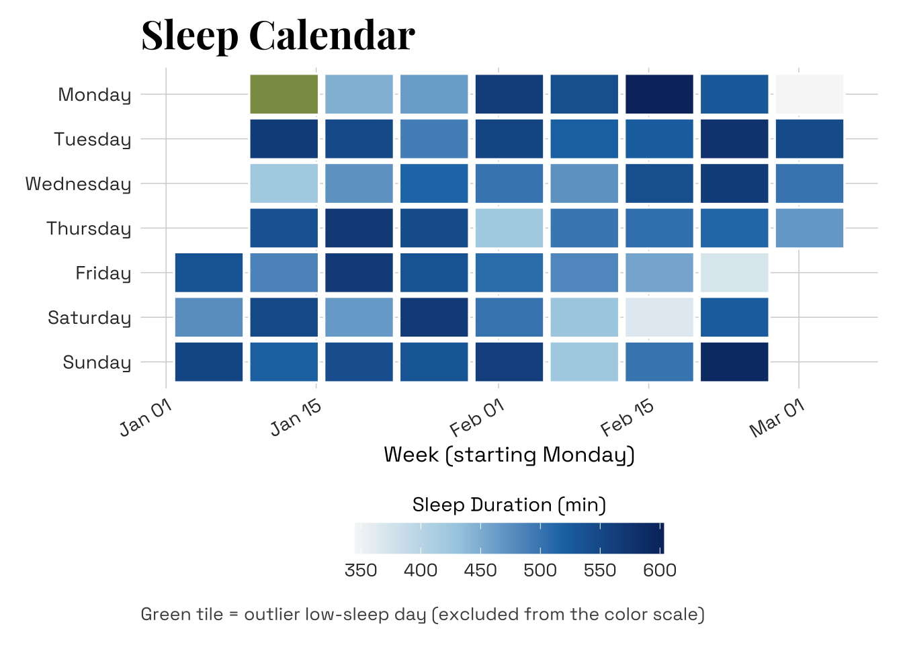
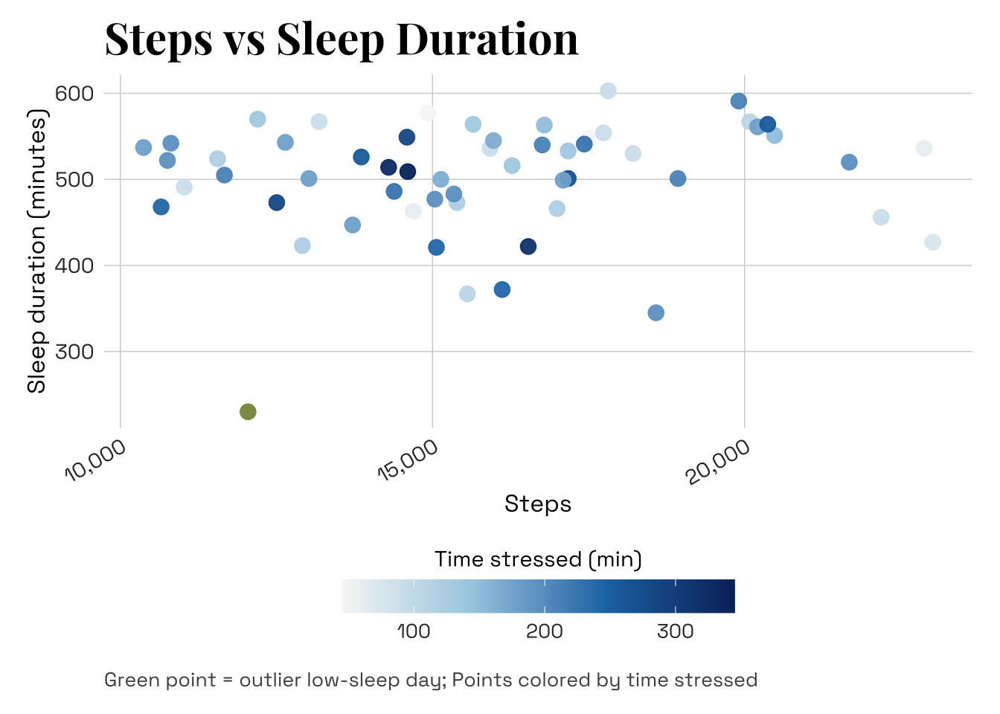

library(tidyverse) # loads in tidyverse package
library(janitor) # loads in janitor package
library(lubridate) # loads in lubridate package
library(here) # loads in here package
library(scales) # loads in scales package
library(showtext) # loads in showtext package
library(sysfonts) # loads in sysfonts package
library(ggtext) # loads in ggtext package
library(ggplot2) # loads in ggplot2 package
library(fontawesome) # loads in fontawesome package
library(grid) # loads in grid package
# Stores my personal data as an object called my_data
raw_data <- read.csv(here('data',"193DS data - stress (6).csv")) Advanced Data Visualization
Set up Chunk
Cleaning data
# Create a cleaned version of the raw dataset
cleaned_data <- raw_data |>
# Standardize column names:converts all column names to lowercase with underscores
clean_names() |>
mutate(
# Convert date column from character (mm/dd/yyyy) to proper Date format
date = mdy(date_mm_dd_yyyy),
# Convert day_of_week into an ordered factor
day_of_week = factor(day_of_week,
levels = c("Monday",
"Tuesday",
"Wednesday",
"Thursday",
"Friday",
"Saturday",
"Sunday")),
# Convert sleep efficiency from % style character to numeric proportion
sleep_efficiency = parse_number(as.character(sleep_efficiency)) / 100,
# Convert Pilates variable to categorical factor
pilates = factor(pilates, levels = c("No","Yes")))Stores important info that changes as data set updates:
# Calculate the total number of observations (days recorded)
n_obs <- nrow(cleaned_data)
# Identify the earliest date in the dataset
min_date <- min(cleaned_data$date, na.rm = TRUE)
# Identify the most recent date in the dataset
max_date <- max(cleaned_data$date, na.rm = TRUE)Create base theme + aesthetics (xxx might change later)
# Loads custom fonts
# "Playfair Display" will be used for titles
font_add_google("Playfair Display", "playfair")
# "Space Grotesk" will be used for axis labels and body text
font_add_google("Space Grotesk", "space")
# Activate showtext so ggplot can render fonts
showtext_auto()
# Creates custom gradient palettes
week_colors <- c(
Monday = "#2F6DA3",
Tuesday = "#3F82B8",
Wednesday = "#2D9C8F",
Thursday = "#53B7C5",
Friday = "#6F8FD8",
Saturday = "#7C72B6",
Sunday = "#9C8AB9")
# Creates custom gradient palettes
palette_gradient <- c("#A6CEE3","#1F78B4", "#08306B")
# Creates custom gradient palettes
palette_gradientA <- c("#F7F7F7", "#A6CEE3", "#1F78B4", "#08306B")
# creates custom color for outlier
outlier_green <- "#8A9B52"
# creates objects that will be used for title fonts
plot_title_family <- "playfair"
# creates objects that will be used for body text fonts
body_family <- "space"
# Create a reusable base theme for all plots
base_theme <- theme_minimal(base_family = body_family) + # sets body text font
theme(
# Main title styling
plot.title = element_text(family = plot_title_family, # sets title text font
face = "bold", # sets title text to bold
size = 22, # sets title text size
color = "black", # sets title text color
margin = margin(b = 6)), # sets margin
# Subtitle styling
plot.subtitle = element_text(size = 11, # sets subtitle text size
color = "gray25", # sets subtitle text color
margin = margin(b = 10)), # sets margin
# Caption styling
plot.caption = element_text(size = 10, # sets caption size
color = "gray30", # sets caption color
hjust = 0, # sets caption alignment
margin = margin(t = 10)), # sets margin
# Axis title styling
axis.title = element_text(size = 12, # sets axis title size
color = "black"), # sets axis title color
# Axis tick label styling
axis.text = element_text(size = 10.5, # sets axis tick label size
color = "gray20"), # sets axis tick label color
# Legend title styling
legend.title = element_text(size = 11, # sets legend title size
color = "black"), # sets legend title color
# Legend text styling
legend.text = element_text(size = 10, # sets legend text size
color = "gray20"), # sets legend text color
legend.position = "bottom", # sets legend position to bottom of graph
legend.direction = "horizontal", # sets legend position to horizontal
legend.box = "horizontal", # sets legend alignment to horizontal
panel.grid.minor = element_blank(), # Removes minor grid lines
# Keeps subtle major grid lines
panel.grid.major = element_line(linewidth = 0.25, # sets gridline width
color = "gray82"), # sets gridline color
plot.margin = margin(12, 14, 12, 14)) # Adds margin around edges of plot
# Creates consistent settings for color bar legends
bottom_colorbar <- guide_colorbar(title.position = "top", # sets position
title.hjust = 0.5, # sets alignment
barwidth = unit(7, "cm"), # sets width
barheight = unit(0.6, "cm")) # sets heightPlot 1: Boxplot + jitter (Sleep by day of week)
# Compute overall median sleep duration across all days (for reference line)
overall_median_sleep <- median(
cleaned_data$time_slept_minutes, # finds medien of time slept column
na.rm = TRUE) # ignores missing values
# Compute median sleep for each day of the week
med_by_day <- cleaned_data |> # uses cleaned data
group_by(day_of_week) |> # group observations by weekday
summarize(med_sleep = median(time_slept_minutes, # compute median w/in each weekday
na.rm = TRUE), # remove missing values if any
.groups = "drop") # ungroups df
# Identify the day with the highest median sleep
highlight_day <- med_by_day |> # uses data set with median by day column
slice_max(med_sleep, n = 1) |> # select row with maximum median sleep
pull(day_of_week) |> # extract just the weekday value
as.character() # convert to character
# Store the numeric value of the highest median for annotation text
highlight_median <- med_by_day |> # uses data set with median by day column
filter(day_of_week == highlight_day) |> # selects row with the highest median
pull(med_sleep) # returns the med_sleep column as a numeric vector
# Build the boxplot visualization
p1_box <-
ggplot( # base layer
cleaned_data, # uses cleaned data
aes(x = day_of_week, # x axis is categorical predictor (weekday)
y = time_slept_minutes)) + # y axis is response variable (sleep duration)
geom_hline( # Add horizontal line at overall median sleep
yintercept = overall_median_sleep, # location of reference line at median
linetype = "dashed", # styles line as dashed
color = 'black', # sets color of line
linewidth = 0.8) + # sets thickness of line
geom_boxplot( # Draw boxplots for each day
aes(fill = day_of_week), # colors boxes by weekday
width = 0.65, # sets width of boxes
alpha = 0.45, # sets transparency level of boxes
color = 'gray20', # sets color of outline
outlier.shape = NA) + # suppress default outlier points
geom_jitter( # Add jittered points to show individual observations
aes(color = day_of_week), # colors points by weekday
width = 0.11, # sets horizontal jitter
height = 0, # no vertical jitter
alpha = 0.65, # sets transparency level
size = 2.3) + # sets point size
scale_fill_manual(values = week_colors, # Apply manual fill color scale
guide = 'none') + # removes legend
scale_color_manual(values = week_colors, # Apply manual fill color scale
guide = "none") + # remove duplicate legend
labs( # creates labels
title = "Sleep Duration by Day of Week", # sets plot title
x = "Day of week", # sets x-axis title
y = "Time Slept (minutes)") + # sets y-axis title
base_theme + # uses preset base theme
# Add curved arrow annotation highlighting highest median day
geom_curve( # creating arrow
aes(x = highlight_day , # sets arrow starting x-position
# sets arrow starting y-position
y = max(cleaned_data$time_slept_minutes, na.rm = TRUE) * 1.02,
xend = highlight_day , # sets arrow ending x-position
# sets arrow ending y-position
yend = med_by_day$med_sleep[med_by_day$day_of_week == highlight_day] * 1.02),
curvature = -0.35, # sets degree of curve
linewidth = 0.7, # sets width of line
arrow = arrow(length = unit(0.1, "inches")), # sets arrowhead size
inherit.aes = FALSE) + # prevents inheriting global aesthetics
annotate( "text", # Add text label describing highlighted day
x = highlight_day, # horizontal position is the highlighted day
# sets vertical position of label
y = max(cleaned_data$time_slept_minutes, na.rm = TRUE) * 1.05,
# creates content of label
label = paste0("Highest median: ", round(highlight_median, 0), " min"),
vjust = 0, # sets vertical alignment
size = 3.6, # sets text size of label
color = "gray20", # colors text
family = body_family) # sets font family of label
p1_box # shows plot 1
# saves plot 1 with specifications
ggsave("plot1_sleep_by_day.png", p1_box, width = 9, height = 5, dpi = 300)Plot 2: Scatter + Bins (Sleep duration vs efficiency)
p2_sleep_scatter <-
ggplot(cleaned_data, # uses cleaned data
aes(x = sleep_efficiency, # x-axis is continuous predictor (weekday)
y = time_slept_minutes)) + # y-axis is response (sleep duration)
geom_bin2d(bins = 10) + # Create rectangular bins instead of individual points
scale_fill_gradientn(
colors = palette_gradient, # sets consistent coloration
guide = bottom_colorbar, # sets consistent legend settings
name = "Number of days")+ # creates legend title
labs(
title = "Sleep Duration vs Sleep Efficiency", # sets plot title
x = "Sleep Efficiency (proportion, 0–1)", # sets x-axis title
y = "Time slept (minutes)") + # sets y-axis title
base_theme # uses preset base theme
p2_sleep_scatter # shows plot 2
# saves plot 2 with specifications
ggsave("plot2_duration_vs_efficiency.png", p2_sleep_scatter, width = 7.5, height = 5, dpi = 300)Plot 3: Calendar-style heatmap (Daily sleep over time)
# Create variables needed for a calendar grid layout
cleaned_data_cal <- cleaned_data |>
# set order Monday–Sunday so heatmap rows display chronologically
mutate(weekday = factor(wday(date, label = TRUE, abbr = FALSE),
levels = c("Monday",
"Tuesday",
"Wednesday",
"Thursday",
"Friday",
"Saturday",
"Sunday")),
# Create a week index variable
week = floor_date(date, unit = "week", week_start = 1))
# Identify the unusually low-sleep Monday
low_sleep_day <- cleaned_data_cal |> # uses altered calender plot data
filter(time_slept_minutes == min(time_slept_minutes)) # selects outlier
# Create a variable flagging that extreme low day
cleaned_data_cal <- cleaned_data_cal |> # uses altered calender plot data
mutate(low_sleep_flag = if_else(
time_slept_minutes == min(time_slept_minutes), # detects lowest sleep day
"Extreme low sleep","Normal range")) # identifies sleep range as normal/low
# Compute gradient limits excluding the extreme day
sleep_range <- cleaned_data_cal |> # uses altered calender plot data
filter(low_sleep_flag=="Normal range") |> # filters to 'normal' sleep durations
summarise(
min_sleep = min(time_slept_minutes), # sets min bound of range
max_sleep = max(time_slept_minutes)) # sets max bound of range
p3_calendar <-
ggplot(cleaned_data_cal, # uses altered calender plot data
aes(x = week, # column position = week grouping
y = weekday)) + # row position = day of week
geom_tile( # Draw rectangular tiles for each date (in NORMAL range)
data = cleaned_data_cal # uses cleaned data
|> filter(low_sleep_flag == "Normal range"), # filter to normal sleep range
aes(fill = time_slept_minutes), # fills color by time slept
color = "white", # makes white borders between tiles
width = 6.5, # sets tile width
height = 0.92, # sets tile height
linewidth = 0.6) + # sets thickness of tile borders
geom_tile( # Draw rectangular tiles for each date (in LOW range)
data = cleaned_data_cal # uses cleaned data
|> filter(low_sleep_flag == "Extreme low sleep"), # filters to outliers
fill = outlier_green , # colors outliers green
color = "white", # makes white borders between tiles
width = 6.5, # sets tile width
height = 0.92, # sets tile height
linewidth = 0.6) + # sets thickness of tile borders
scale_x_date(date_labels = "%b %d") + # display axis format like "Jan 09"
scale_fill_gradientn(
colors = palette_gradientA, # sets consistent colors
name = "Sleep Duration (min)", # legend title
limits = c(sleep_range$min_sleep, # sets min range
sleep_range$max_sleep), # sets max range
guide = guide_colorbar(
barwidth = 12, # makes legend wider
barheight = 1.2, # makes legend taller
title.position = "top", # places title at top
title.hjust = 0.5)) + # sets horizontal alignment of title
# flips axis so Monday appears at top of heatmap
scale_y_discrete(limits = rev(levels(cleaned_data_cal$weekday))) +
labs(
title = "Sleep Calendar", # sets title
# sets caption text content
caption = "Green tile = outlier low-sleep day (excluded from the color scale)",
x = "Week (starting Monday)", # sets x-axis title
y = NULL) + # no title for y-axis
base_theme + # uses preset base theme
theme(axis.text.x = element_text(angle = 30, hjust = 1), # sets angle + alignment
panel.grid = element_blank()) # determines grid
p3_calendar # shows plot 3
# saves plot 3 with specifications
ggsave("plot3_calendar_heatmap.png", p3_calendar, width = 10, height = 4.8, dpi = 300)Plot 4: Bubble scatter (Steps vs sleep duration; color = time stressed)
# Identify sleep outlier value (low sleep day)
sleep_outlier <- min(cleaned_data$time_slept_minutes, na.rm = TRUE)
# Flag outlier day
cleaned_data_bubble <- cleaned_data |> # uses cleaned data
mutate(sleep_outlier_flag = time_slept_minutes ==sleep_outlier) # flags outlier
# Compute color scale limits excluding the outlier day
stress_limits <- cleaned_data_bubble |> # uses altered data for bubble plot
filter(!sleep_outlier_flag) |> # filters to non-outlier data
summarise(
min_stress = min(time_stressed_min, na.rm = TRUE), # sets min border
max_stress = max(time_stressed_min, na.rm = TRUE)) # sets max border
p4_bubble <-
ggplot(cleaned_data_bubble, # uses altered data for bubble plot
aes(x = number_of_steps, # x-axis is # of steps
y = time_slept_minutes)) + # y-axis is response (sleep duration)
geom_point( # creates non-outlier points
data = cleaned_data_bubble # uses altered data for bubble plot
|> filter(!sleep_outlier_flag), # selects only non-outliers
aes(color = time_stressed_min), # colors by time stressed
alpha = 0.95, # sets opacity
size = 3.3) + # sets size
geom_point( # creates outlier point excluded from color-scale
data = cleaned_data_bubble # uses altered data for bubble plot
|> filter(sleep_outlier_flag), # selects only outlier
color = outlier_green, # colors outlier green
size = 3.3) + # sets size
scale_x_continuous(labels = comma) + # formats x-axis with commas
scale_color_gradientn(
colors = palette_gradientA, # custom gradient colors
name = "Time stressed (min)", # legend title
guide = bottom_colorbar, # sets consistent legend settings
limits = c(stress_limits$min_stress, # sets min limit
stress_limits$max_stress)) + # sets max limit
labs(title = "Steps vs Sleep Duration", # sets title
# creates caption
caption = "Green point = outlier low-sleep day; Points colored by time stressed",
x = "Steps", # sets x-axis title
y = "Sleep duration (minutes)") + # sets y-axis title
base_theme + # uses base theme
theme(axis.text.x = element_text(angle = 30, hjust = 1),
# sets angle and alignment
panel.grid = element_blank())
# determines grid
p4_bubble # shows plot 4
# saves plot 4 with specifications
ggsave("plot4_steps_stress_sleep.png", p4_bubble, width = 7.5, height = 5, dpi = 300)Write Up
General information about design and visualization
What patterns are you highlighting in each visualization? Why?
The boxplot with jitter highlights how sleep duration varies across the days of the week while still showing individual observations and variability. The sleep duration versus efficiency plot emphasizes where most observations cluster, revealing that longer sleep tends to occur with higher sleep efficiency. The calendar heatmap shows how sleep duration changes over time and highlights unusual low-sleep days, while the steps versus sleep plot explores whether activity and stress appear to relate to sleep duration.
Outside of the data visualization, what aesthetic choices (e.g. color, font, arrangement) did you make and why? In what way do your choices contribute to a compelling or interesting narrative?
I used custom color palettes including variations of blues for my plots as well as my infographic background and text to create a visually cohesive theme across my infographic and visualizations. Additionally, I chose fonts for headers (Playfair Display) and body text (Space Grotesk) that remained consistent throughout all visualizations and the inforgraphic itself. This aligns visually with the theme of text and helps maintain cohesion across figures. I also dedcided to use minimal grid lines, consistent legend placement, and text sizes to keep the focus on the data while creating a polished and cohesive visual narrative.
Sources and process
For each visualization, describe what examples inspired that visualization (cite the author)
My inspiration for the labeling and arrows on my boxplot (plot 1) comes Cédric Scherer’s article titled The Evolution of a ggplot (Ep. 1) and I drew inspiration for my binned scatterplot (plot 2) from Alboukadel Kassambara’s article ggplot2 scatter plots : Quick start guide - R software and data visualization. My inspiration for the heatmap (plot 3) visualization came from Daniel Emaasit’s article on ggplot2 extensions. Lastly, I was inspired to add the dimension of color to my scatter plot from the website Bubble plot with ggplot2 created by Yan Holtz.
Describe your coding process, for example (not the only options for this prompt): did you have to clean up/summarize the data before you started? Which geoms did you start with? What geoms did you end up using, and why?
I first cleaned and prepared the dataset by standardizing column names (using clean_names()), converting the date column into a proper date format (using mutate()), ordering weekday factors (using factor()), and converting sleep efficiency into a numeric proportion (using parse_number()) . I created each visualization using geoms to improve interpretation and visual aesthetics including: geom_hline(to provide a visual benchmark at the overall median sleep duration, making it easier to compare how each weekday differs from the typical amount of sleep), geom_boxplot(summarizes the distribution of sleep duration across weekdays), geom_point /geom_jitter(shows the individual daily observations to reveal variability and potential clustering), geom_curve (to highlight notable features in the data, such as the day with the highest median sleep. For the efficiency plot), geom_bin2d(rather than a standard scatter plot to reduce overplotting and more clearly display where observations cluster), and geom_tile (to construct a calendar-style heatmap that makes changes in sleep duration across days and weeks easier to interpret). Additional data transformations were required for individual plots, including grouping by weekday to calculate medians, restructuring the data to create a calendar-style layout, and flagging a low-sleep outlier in order to remove it from color gradients.
Describe the tools you used: other people’s code? Google/StackOverflow? ChatGPT (with examples of prompts)?
I used R with the tidyverse and ggplot2 for all data cleaning, transformation, and visualization. Supporting packages such as lubridate, janitor, scales, showtext, and sysfonts were used to handle dates, clean variable names, format axes, and customize fonts. I also used ChatGPT to troubleshoot issues with commits (prompts like: “How can I fix this error?”) and improve cohesiveness across plots (prompts asking for ideas to make plots more consistent).